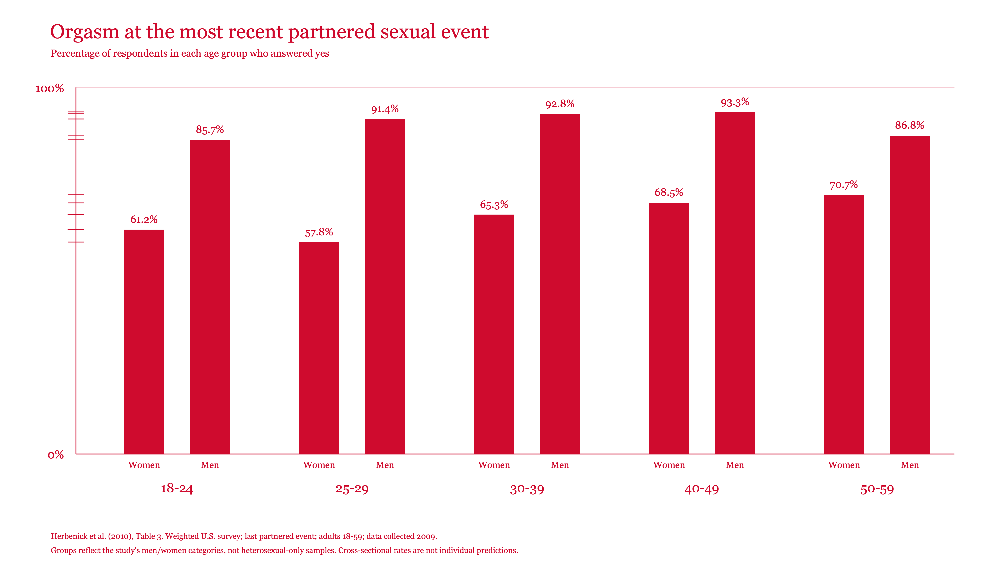
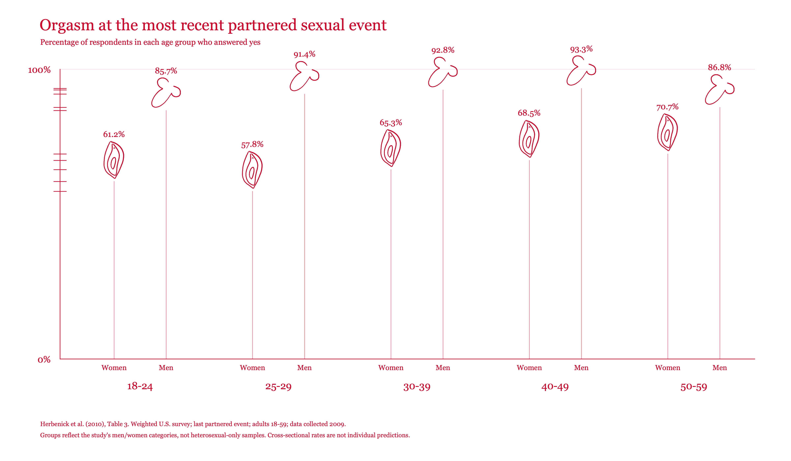

Age: reported percentages
Two versions of the same ten weighted percentages from Herbenick et al. (2010), Table 3. Each percentage is the share reporting an orgasm at their most recent partnered sexual event.
Experiment notes · Source note

